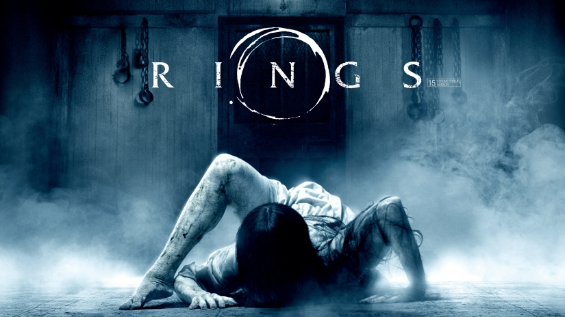

| Rings | |
|  |
A journalist must investigate a mysterious videotape
which seems to cause the death of anyone in a week of viewing it.
Director: Gore Verbinski
Writers: Ehren Kruger (screenplay), Kôji Suzuki (novel)
(as Koji Suzuki)
Stars: Naomi Watts, Martin Henderson, Brian Cox | See
full cast & crew » |